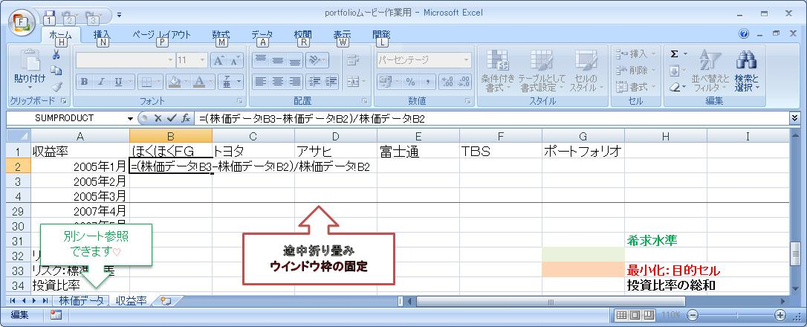
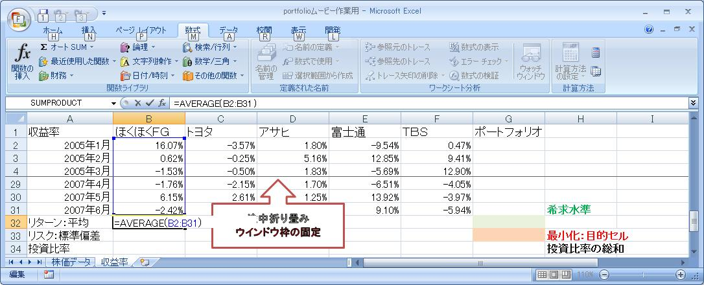
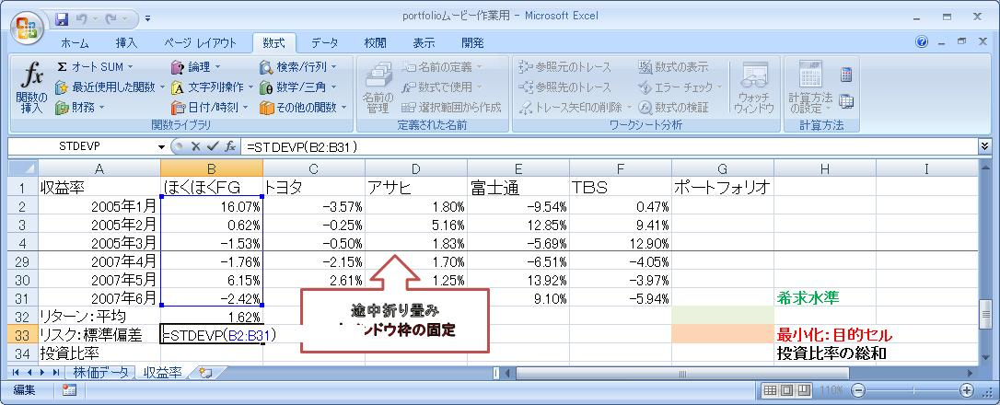

富山大学経済学部
経営モデル分析
学習ユニット〜マーコビッツのＭＶモデルと最適ポートフォリオ〜
ユニット１
I. ポートフォリオのリターンとリスク：復習
- ここのエクセル・データ（右クリックでダウンロード→ファイルに保存）に基づき、各々の銘柄の月次収益率を求めなさい。
- 収益率のデータから、各々の銘柄のリターン（収益率の平均）とリスク（収益率の標準偏差）を求めなさい。
- 各銘柄に等分比率で投資した場合の、ポートフォリオのリターン（収益率の平均）とリスク（収益率の標準偏差）を求めなさい。
入力例：ステップ１
手順（各銘柄）：収益率→平均→標準偏差
この手順はすでに、練習済みなのでかんたん♪ 標準偏差も関数使いましょ。最初の銘柄を仕込めば、あとはコピペでＯＫ！
（注）図やムービーは、エクセルの「ウインドウ枠の固定」を使って、途中を折り畳んでいます。たたみ方のムービーで確認して下さい。
- 月次収益率＝（次月株価−今月株価）／今月株価

- リターン（平均）＝ＡＶＥＲＡＧＥ

- リスク（標準偏差）＝ＳＴＤＥＶＰ
